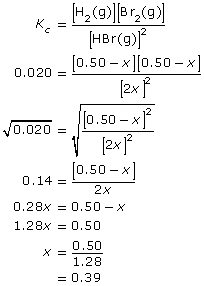

Module 7—Principles of Chemical Equilibrium
 Self-Check Answers
Self-Check Answers
Contact your teacher if your answers vary significantly from the answers provided here.
SC 1.
Section 15.1
1.a. |
Equation |
H2(g) + Cl2(g) |
|
Equilibrium Law Expression |
|
1.b. |
Equation |
N2(g) + 3 H2(g) |
|
Equilibrium Law Expression |
|
1.e. |
Equation |
CaCO3(s) |
|
Equilibrium Law Expression |
|
1.f. |
Equation |
Na2SO4(aq) + CaCl2(aq) Net ionic equation: SO42–(aq) + Ca2+(aq) |
|
Equilibrium Law Expression |
Section 15.1 2.
Alkenes tend to readily undergo addition reactions with halogens. It would be expected that the reaction would be stoichiometric, or greater than 99% complete.
Section 15.1 4.
Section 15.1 5.
Section 15.1 6.
Section 15.1 7.
-
Since H2 and Br2 are produced in 1:1 proportions, then the chemical amount of Br2 formed is 0.400 mol.
- Concentration at equilibrium:
HBr(g) = 0.100 mol/L

Section 15.1 9.
Assume the flask contains no other substances at the start of the experiment except CO(g) and H2O(g) and that the reaction chamber has a volume of 1.00 L.
| Concentration | CO2(g) (mol/L) |
H2(g) |
CO(g) |
H2O(g) |
Initial |
0 |
0 |
0.20 |
0.25 |
Change |
+0.10 |
+0.10 |
–0.10 |
–0.10 |
Equilibrium |
0.10 |
0.10 |
0.10 |
0.15 |
Section 15.1 10.
Assume the flask contains no other substances at the start of the experiment except H2(g) and Br2(g).
Let x = change in concentration of hydrogen
| Concentration | 2 HBr(g) |
H2(g) |
Br2(g) |
Initial |
0 |
0.50 |
0.50 |
Change |
+2x |
–x |
–x |
Equilibrium |
2x |
0.50 − x |
0.50 − x |

Therefore, the change in concentration of H2(g) is 0.39 mol/L.
The equilibrium concentrations of all substances are